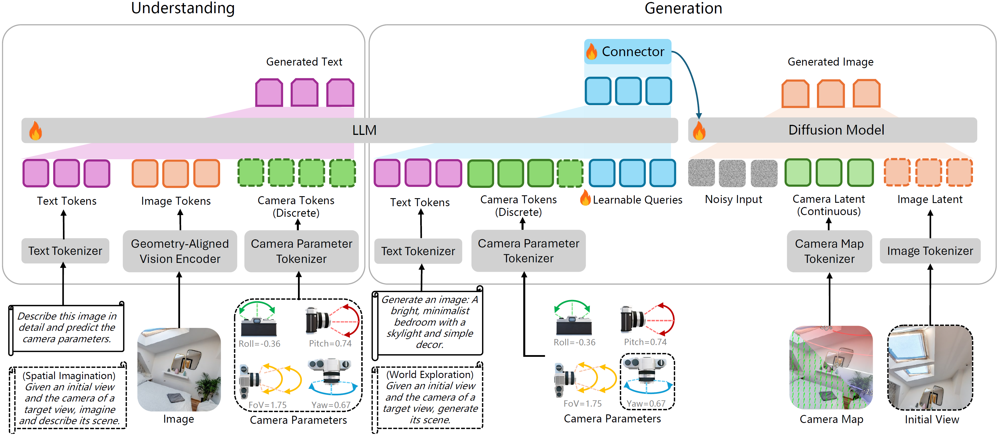
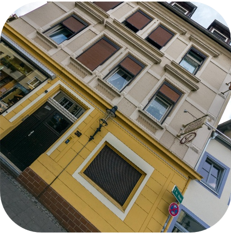
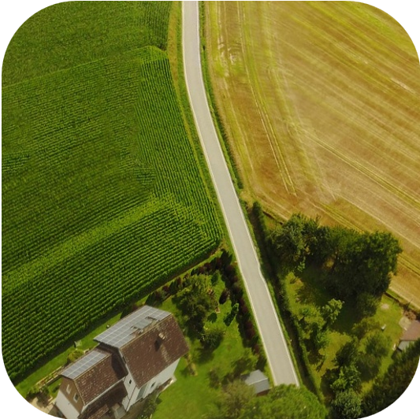
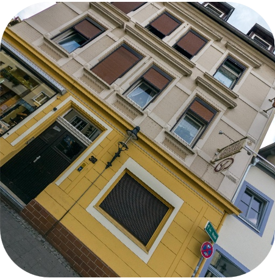
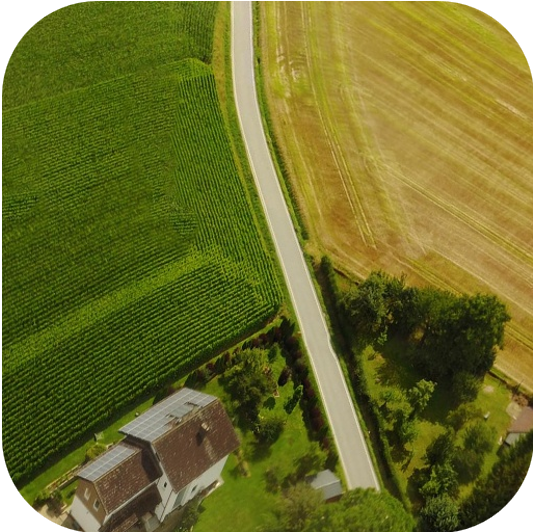

Thinking with Camera: A Unified Multimodal Model for Camera-Centric Understanding and Generation
Thinking with Camera: A Unified Multimodal Model for Camera-Centric Understanding and Generation
Kang Liao1,
Size Wu1,
Zhonghua Wu2,
Linyi Jin3,
Chao Wang4,
Yikai Wang1,
Fei Wang2,
Wei Li1,
Chen Change Loy1
1S-Lab, Nanyang Technological University 2SenseTime Research
3University of Michigan 4Max-Planck Institute for Informatics
ICLR 2026
Illustration of the versatile capabilities of our model. It unifies multimodal camera-centric generation (a) and understanding (b), supports the thinking mode (c), and enables diverse cross-view applications (d).
Framework
We present Puffin, a unified camera-centric multimodal model that extends spatial awareness along the camera dimension. It learns the camera-centric understanding and generation tasks in a unified multimodal framework. The elements bounded with dotted boundaries represent the cross-view understanding and generation during instruction tuning, such as spatial imagination and world exploration.
 



Comparison Results

Qualitative comparison with the state-of-the-art camera-centric generation and understanding methods. For generated images, we adopt an offline camera calibration method to estimate their pixel-wise camera maps. We then compute the median errors of the up vector and latitude to evaluate the spatial simulation performance. For camera understanding, horizon lines are visualized from the estimated camera parameters and GT. Please refer to the Supplementary Results for more details (quantitative evaluation and more visualizations).
Applications

Although Puffin primarily focuses on single-view camera understanding and text-to-image camera-controllable generation, it can be flexibly extended to cross-view settings with our instruction tuning*, by appending additional tokens and switching prompts according to the target task.
World Exploration (Cross-View Generation)
Given an initial view (marked by red box) and expected camera motion (), Puffin can generate the target view with proper spatial consistency. The 3D reconstructed results are derived from the initial view and generated views using VGGT.
By iteratively feeding the generated views into the model, Puffin can generate long-range and panorama-like scenes.
Spatial Imagination (Cross-View Understanding)
Puffin can imagine and describe the scene of a target view given its orientation and an initial view.
Photographic Guidance (Cross-View Understanding)
Puffin can suggest camera parameter adjustments from an initial view to achieve images with higher photographic aesthetics.